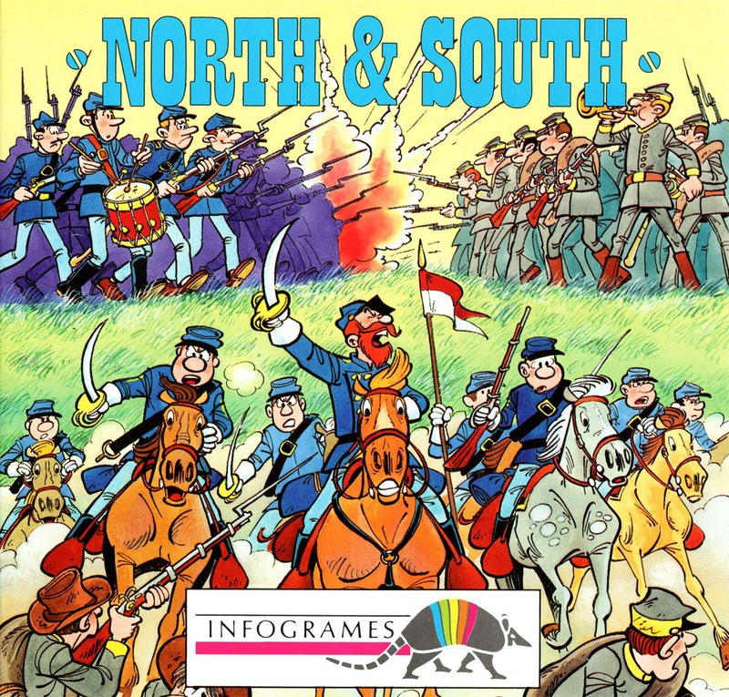
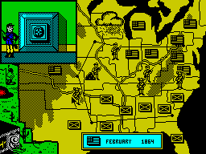

North & South


{kind=link}

| Publisher: | Infogrames |
| Price: | £12.99 / £17.99 |
| Year: | 1991 |
| Source: | CRASH, Issue 85 |

Take part in your own American Civil War in this masterpiece of Spectrum programming from Infogrames where comic strip heroes created by Lambil and Cauvin, ‘Les Tuniques Bleues’ or ‘The Blue Jackets’ (who they?) come to life.
The objective of the game is simple. Eliminate all the enemy armies across America to ensure victory for your side. You do this by moving your troops around the States, launching surprise attacks on your enemy’s forts, hijacking trains and having full scale battles across blood stained fields. There are four main parts to the game, each packed with excellent animated graphics, lots of colour and real toe-tapping tunes.

You start with a map of the USA. The armies are shown by soldiers representing good and bad on each State. The type of flag there shows who it belongs to. Running around the edge of the map is a railway line and on the coast ships sail up and down. If you attack a fort you go into an arcade sequence where the fort scrolls along and you have to dodge the guard dogs, ammo boxes and knives coming from the enemy to reach the flag at the far end. Roles are reversed with you defending if an enemy decides to have a go at you.
Intercepting a train is done in a similar way to the fort. The train runs by and you climb up the side and run along the tops of the carriages, jumping the gaps to make it to the driver. Watch out for those knives again though! Engaging in battle is a funny game too. The foot soldiers, horse and cannon operators are all shown on a large field with bridges and rivers separating the two sides. The first army to be totally destroyed by the other is the winner and that state becomes the prize.
North and South really shows up a lot of other games by being just so slick in presentation and graphics. There are animated sequences as an introduction, and when you win and lose a game, as well as all the excellently drawn and animated arcade sequences. Play is a little puzzling at first but you easily get the hang of it and you can vary the difficulty. You do this by selecting options at the beginning of a bout. You can choose to have the ships on or off, an important decision, as they bring reinforcements from Europe. You can have Indians on or off to save being attacked and change the weather conditions which stop an army moving.
For those of you who don’t like playing arcade sequences all the time there’s also an option to stop them: battles are then decided for you by the computer. North and South is not to be missed. If more games were like this there wouldn’t be talk of the Spectrum dying. Three cheers for all those involved (hip, hip, hooray!).
NICK — 95%
I’m surprised and very pleased to see that the programmer has managed to cram so much into a Speccy game! The graphics are colourful and highly detailed, and the hilarious civil war jingles and tunes complement the action perfectly. As with all two-player games North and South is best played against a mate. This way it’s great fun to blast the hell out of one another and still be friends (unless one of you’s a bad loser). It’s very rare for me to mark a game over 95%, but I love North and South to death (Bang! You’re dead — Ed).
MARK — 97%
RATING
Loads of different styles of gameplay, all well produced, make up a masterpiece!
| Presentation: | 95% |
| Graphics: | 93% |
| Sound: | 90% |
| Playability: | 91% |
| Addictivity: | 91% |
| Overall: | 96% |